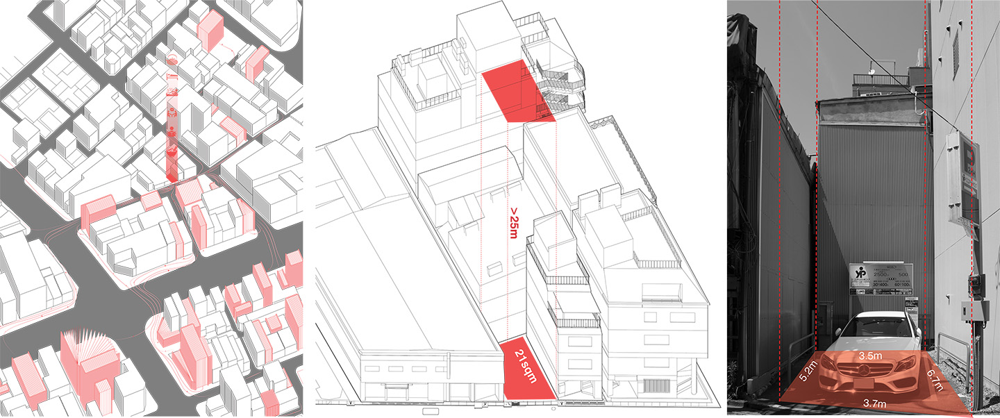

THE SHARABLE SOLO
Hey! Are you open today?
2021
Jimbocho is flourishing as a ‘scholar district’ with a large collection of bookstores, used-book markets, publishers and other educational resources. Under the increasing rental demands brought by wandering scholars living on limited budgets, the neighborhood has to squeeze every square meter to accommodate not only new residents but also amenities including bookstores, study rooms, coffee shops, restaurants, and entertainment. In a cramped alley at the center of Jimbocho, a solo parking space with a 21sqm footprint can be an opportune site to experiment with alternative solo dwelling in forms of a pencil building.
Ever since my first visit to the site during the UM Open City Studio program in 2016, I have actively been reimagining its futures as alternative dwelling. After finishing the initial project of shared home in OCS, I continued my design experiments on the subject and produced another two schemes with different foci of thoughts evolved alongside my growing senses of design and Tokyo.
Hey! Are you open today?
2021
...how about Muji on the 8F?
2018
Roof tea chat anyone?
2016